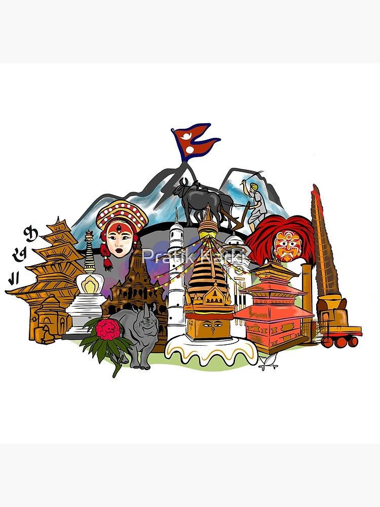

Made by Kapil Karki
©2025 | Culture of Nepal


Explore the traditions, festivals and lifestyle of Nepal.
Discover moreNepal is a land of rich history and cultural heritage, shaped by ancient civilizations and dynasties. It is the birthplace of Lord Buddha and home to Mount Everest, making it significant both spiritually and geographically...
Learn moreNepal is a land of festivals, where celebrations reflect its diverse culture and traditions. Dashain and Tihar are the biggest festivals, symbolizing victory, light, and family unity...
Learn moreNepalese food is simple, healthy, and full of flavor, reflecting the country’s culture and geography. The national dish, Dal Bhat, consists of rice, lentil soup, and vegetables...
Learn moreMusic and dance in Nepal are vital parts of its cultural identity, passed down through generations. Folk music using instruments like madal, sarangi, and bansuri reflects daily life...
Learn moreDashain is Nepal’s biggest and longest festival, celebrated with great joy and devotion. It honors Goddess Durga’s victory over evil...
Tihar, also known as Deepawali, is Nepal’s festival of lights celebrated for five days. Each day honors animals like crows, dogs, and cows...
Holi, the festival of colors, is joyfully celebrated in Nepal and India. It marks the arrival of spring and victory of good over evil...
Nepal is a beautiful landlocked country situated between China and India, known worldwide for its natural beauty, cultural diversity, and historical significance. It is home to the majestic Himalayas, including Mount Everest, the highest peak in the world, which attracts climbers and travelers from across the globe. Despite being small in size, Nepal has incredible geographical diversity, ranging from snowy mountains in the north to fertile plains in the south. The country is rich in culture and traditions, with people from different ethnic groups living together in harmony. Festivals like Dashain, Tihar, and Holi reflect the joy and unity of Nepali society. Kathmandu, the capital city, is famous for its ancient temples, stupas, and world heritage sites. Nepal is also the birthplace of Lord Buddha, adding to its global spiritual significance. With its breathtaking landscapes and warm hospitality, Nepal is truly a unique and fascinating destination.
